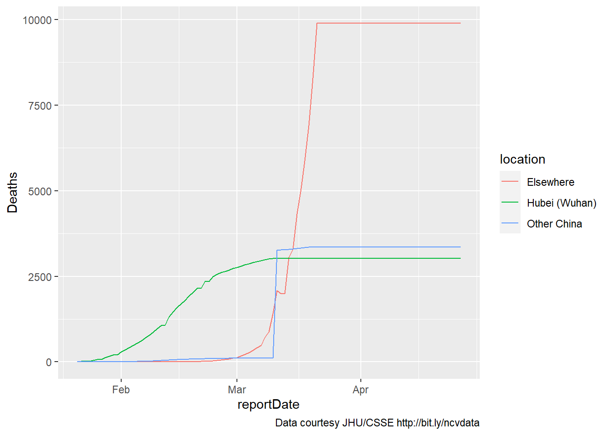

6 visualization in R with ggplot
In the last chapter, we introduced data visualization, citing “vision-aries” including Edward Tufte and Hans Rosling, inspired works such as Minard’s Carte Figurative and Periscopic’s stolen years, as well as a few cautionary tales of misleading and confusing graphs.
Here, in playing with and learning the R package ggplot, we begin to move from consumers to creators of data visualizations.
As the first visualization in Wickham and Grolemund (2016) reminds us, data visualization is at the core of exploratory data analysis:
Fig 6.1: Data visualization is at the core of data analysis (Wickham and Grolemund (2016))
In the world of data science, statistical programming is about discovering and communicating truths within your data. This exploratory data analysis is the corner of science, particularly at a time in which confirmatory studies are increasingly found to be unreproducible.
Most of your reading will be from Chapter 3 of Wickham and Grolemund (2016), this is intended only as a supplement.
6.1 a picture > (words, numbers)?
The chapter begins with a quote from John Tukey about the importance of graphs. Yet there is a tendency among some statisticians and scientists to discount graphs, to consider graphic representations of data as less valuable than statistical ones. It is true that, because there are many ways to graph data, and because scientists and data journalists are humans with pre-existing beliefs and values, a graphical displays should not be assumed to simply depict a singular reality. But the same can be said about statistical analyses (see Chapter 8).
To consider the value of statistical versus graphical displays, consider ‘Anscombe’s quartet’ (screenshot below, live at http://bit.ly/anscombe2019):

Exercise 6_1 Consider the spreadsheet chunk presented above, which I am characterizing as data collected on a sample of ten primary school children at recess on four consecutive days. Working with your classmates, compute the mean, standard deviation, and correlation between the two measures for one day. Share your results with the class.
The four pairs of variables in Anscombe (1973b) appear statistically “the same,” yet the data suggest something else. Later, we’ll try to plot these. Perhaps graphs can reveal truths that statistics can hide.
6.2 Read Hadley ggplots
In class, we will review and recreate the plots in section 3.2 of Wickham and Grolemund (2016) and exercises through 3.4.
Savor this section, reading slowly, and playing around with the RStudio interface. For example, read about the mpg data in the ‘help’ panel, pull up the mpg data in a view window, and sort through it by clicking on various columns.

Fig. 6.2: A screenshot from RStudio, showing the mpg dataset
6.3 exploring more data
Explore the Gapminder data https://cran.r-project.org/web/packages/gapminder/README.html
Choose one of the datasets in R, pull out a few variables, and explore these.
Try to make a cool graph - one that informs the viewer, and, to paraphrase Tukey, helps us see what we don’t expect.
Try several different displays. Which fail? Which succeed? Be prepared to share your efforts.
Don’t be afraid to screw up.
6.4 Advanced: Tracking the Novel Coronavirus
Here, I want to consider a timely (but challenging) dataset.
The Novel Coronavirus is an emerging health crisis, particularly in Wuhan (a Chinese city larger than New York City) and the surrounding province of Hubei. It is not yet a threat in the United States - there have, at this writing (02/11/20) been zero cases in Florida. Still, tracking the spread of the virus - the unfolding number of people infected and recovered, as well as the number of deaths - is a fascinating exercise.
This is an educational script for students learning R with the Tidyverse. It reads data provided by the Johns Hopkins Center for Systems Science and Engineering (JHU/CSSE).
It was modified February 3 because of new GoogleSheet link and altered variable names, on Feb 5 because of a new URL for the data and additional changes in the variable name for date, and Feb 7 to (a) remove need for OAuth and (b) separate Wuhan from other China. On Feb 9, additional data cleaning was performed and interactive plots were added. On February 11, the code was rewritten to read files from a Github repo rather than Google Sheets.
This does not use an API or require authorization from Github.
library(tidyverse)
library(magrittr)
library(lubridate)
library(plotly)
library(htmlwidgets)
library(httr)
library(purrr)
# get list of files
filelist <- GET("https://api.github.com/repos/CSSEGISandData/2019-nCoV/git/trees/master?recursive=1") %>%
content() %>%
# there is probably a more efficient way to reduce this
# list to a set of filenames
flatten() %>%
map ("path") %>%
flatten() %>%
tibble() %>%
rename(filename = 1) %>%
filter(str_detect(filename,".csv") &
str_detect(filename,"daily"))
nsheets <- nrow(filelist)
rawGitFiles <- "https://raw.githubusercontent.com/CSSEGISandData/2019-nCoV/master/"6.4.1 Reading the data
The Novel Coronavirus data consists of a series of csv files in a Github repository. This combines them into a single sheet in R.
# variables to retain or create
numvars <- c("Confirmed", "Deaths", "Recovered")
varlist <- c("Province/State", "Country/Region",
"Last Update", numvars)
# one cool trick to initialize a tibble
coronaData <- varlist %>%
map_dfr( ~tibble(!!.x := logical() ) )
# add data from files to tibble
for (i in 1:nsheets) {
j <- read_csv(paste0(rawGitFiles,filelist$filename[i]))
# if a variable doesn't exist in sheet, add it
j[setdiff(varlist,names(j))] <- NA
# datetime is formatted inconsistently
# across files, this must be done before merging
j %<>% mutate(`Last Update` =
parse_date_time(`Last Update`,
c('mdy hp','mdy HM',
'mdy HMS','ymd HMS'))) %>%
select(varlist)
coronaData <- rbind(coronaData, j)
}6.4.2 Cleaning (wrangling, munging) the data
Cleaning the data includes not just finding “errors,” but adapting it for our own use. It’s generally time consuming, as was the case here. The following letters refer to sections of the code below.
- a - fix a few missing values outside of China for province and country
- b - the earliest cases, all in China, did not include country
- c - because province/state is included inconsistently, an unambiguous place variable is created
- d - reportdate is standardized (above) and renamed
- e - in some cases, multiple reports are issued for each day. only the last of these is used for each place.
- f - for dates where no data was supplied, the most recent (previous) data are used
- g - values of NA for Deaths, Confirmed, and Recovered cases are replaced by zero.
- h - Prior to Feb 1, reporting for US included only state, since then, city and state. This drops the (duplicated) province/state-only values beginning Feb 1.
coronaData %<>%
# a
mutate (`Province/State` = case_when(
(is.na(`Province/State`) &
(`Country/Region` == "Australia")) ~ "New South Wales",
(is.na(`Province/State`) &
(`Country/Region` == "Germany")) ~ "Bavaria",
TRUE ~ `Province/State`)) %>%
mutate (`Country/Region` = case_when(
`Province/State` == "Hong Kong" ~ "Hong Kong",
`Province/State` == "Taiwan" ~ "Taiwan",
`Province/State` == "Washington" ~ "US",
# b
is.na (`Country/Region`) ~ "Mainland China",
TRUE ~ `Country/Region`)) %>%
# c
mutate(place = ifelse(is.na(`Province/State`),
`Country/Region`,
paste0(`Province/State`,", ",
`Country/Region`))) %>%
mutate(reportDate =
date(`Last Update`)) %>%
group_by(place,reportDate) %>%
# e
slice(which.max(`Last Update`)) %>%
ungroup() %>%
# fill in missing dates for each place for time series
# f
group_by(place) %>%
complete(reportDate = seq.Date(min(reportDate),
today(),
by="day")) %>%
fill(c(Confirmed,Deaths,Recovered,
`Country/Region`,`Province/State`)) %>%
# g
ungroup() %>%
mutate_if(is.numeric, ~replace_na(., 0)) %>%
# h
mutate(dropcase = ((!str_detect(`Province/State`,",")) &
(reportDate > "2020-01-31") &
(`Country/Region` == "Canada" | `Country/Region` == "US"))) %>%
# dplyr called explicitly here because plotly has taken over 'filter'
dplyr::filter (!dropcase) %>%
select(-c(`Last Update`,`Province/State`,`Country/Region`,dropcase)) 6.4.3 Simplifying the data: China and the rest of the world
This separates data into three locations, breaking down China into Hubei (Wuhan) and other, then summarizes results:
coronaDataSimple <- coronaData %>%
mutate(country = case_when(
str_detect(place,"China") ~ "China",
TRUE ~ "Other countries")) %>%
mutate(location = case_when(
place == "Hubei, Mainland China" ~ "Hubei (Wuhan)",
country == "China" ~ "Other China",
# what happens when this line is not commented out?
# why is it written this way?
# str_detect(place, "ruise") ~ "Cruise Ship",
TRUE ~ "Elsewhere")) %>%
group_by(location,reportDate) %>%
summarize(Confirmed = sum(Confirmed),
Deaths = sum(Deaths),
Recovered = sum(Recovered)) %>%
ungroup()6.4.4 An initial plot
The first plot is simple, including data for only deaths. A caption is added to show the source of the data.
myCaption <- " Data courtesy JHU/CSSE http://bit.ly/ncvdata"
coronaPlot0 <- coronaDataSimple %>%
ggplot(aes(x=reportDate)) +
geom_line(aes(y=Deaths, color = location)) +
labs(caption = myCaption)
coronaPlot0
6.4.5 Adding recovered cases
Here, recovered cases and deaths are included (as these are roughly on the same scale). Additional changes are self-evident.
mySubtitle <- paste0(
"Recovered cases (solid line) and deaths (dotted) by region through ",
(month(today())), "/",
(day(today())),"/",
(year(today())),".")
myCaption <- " Data courtesy JHU/CSSE http://bit.ly/ncvdata"
coronaPlot1 <- coronaDataSimple %>%
ggplot(aes(x=reportDate)) +
geom_line(aes(y=Recovered,
color = location),
linetype = "solid") +
geom_line(aes(y=Deaths,
color = location),
linetype = "dotted") +
theme(axis.title.y =
element_text(angle = 90,
vjust = 1,size = 14),
legend.position = (c(.2,.8))) +
labs(title = "Novel coronavirus",
subtitle = mySubtitle,
y = "Cases",
caption = myCaption)
coronaPlot1
6.4.6 Make the graph interactive
Plotly is an open-source, javascript based library that produces interactive graphs. The syntax that Plotly requires is (a little) different from ggplot, so, for example, the subtitle and caption are folded in to the title here, and the legend is moved a little further over.
6.4.7 Plotting confirmed cases
In this last figure, data for confirmed cases are shown (only the interactive version is included here):
mySubtitle <- paste0(
"Confirmed cases by region through ",
(month(today())), "/",
(day(today())),"/",
(year(today())),".")
coronaPlot2 <- coronaDataSimple %>%
ggplot(aes(x=reportDate)) +
geom_line(aes(y=Confirmed,
color = location),
linetype = "solid") +
theme(axis.title.y =
element_text(angle = 90,
vjust = 1,size = 14),
legend.position = (c(.2,.8))) +
labs(title = "Novel coronavirus",
subtitle = mySubtitle,
y = "Cases",
caption = myCaption)
p <- ggplotly(coronaPlot2) %>%
# make interactive
layout(legend = list(x=.1,y=.9),
title = list(text = paste0('Novel coronavirus',
'<br>',
'<sup>',
mySubtitle,
myCaption,
'</sup>')))
# saveWidget(p, file="coronaConfirmed.html")
p6.4.8 Some questions
- Consider the data and try to run the code yourself.
- What problems did you encounter?
- What parts need to be annotated more?
Can you reverse-engineer my code? Where is it confusing? (remember the 15 minute rule).
What is the relationship between ‘confirmed cases’ and ‘deaths’? Which appears to be increasing more quickly? Is this cause for optimism?
Can you improve on these plots?
Some more challenging questions.
- What is (roughly) the shape of the function for each of the three variables, and for China/Other?
- What values would you expect for, say, ten days from now?
6.4.9 Additional notes
If you are interested in looking at additional epidemiological datasets and how they might be looked at in R, consider this source by Tomás J. Aragón (https://bookdown.org/medepi/phds/). For Plotly in R, check out https://plotly-r.com/
references
Anscombe, FJ. 1973b. “The American Statistician 27.” Graphs in Statistical Analysis, no. 1: 17–21.
Wickham, Hadley, and Garrett Grolemund. 2016. “R for Data Science.” Sebastopol, CA: O’Reilly. http:// r4ds. had. co. nz.